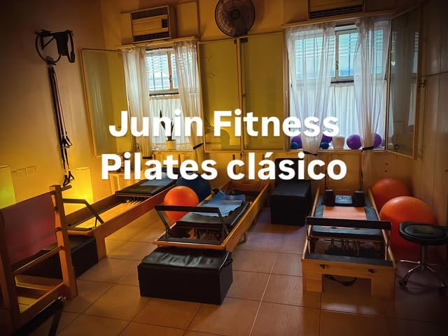
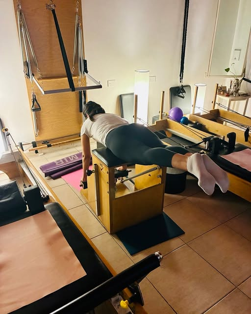
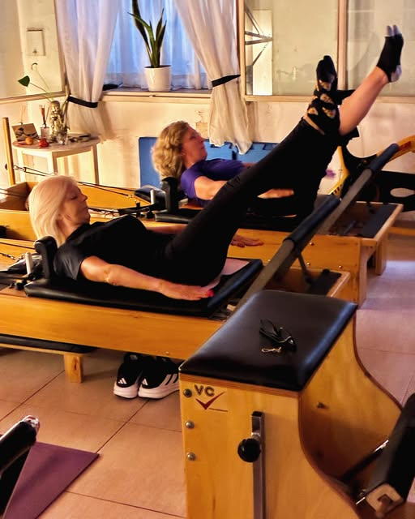
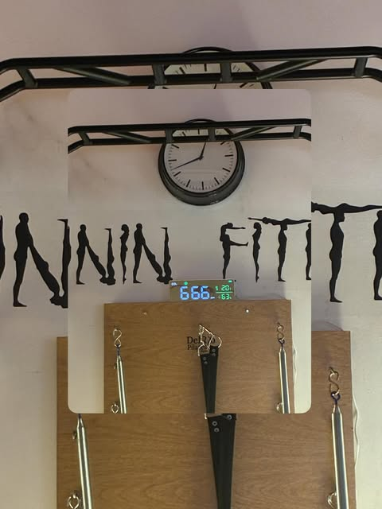
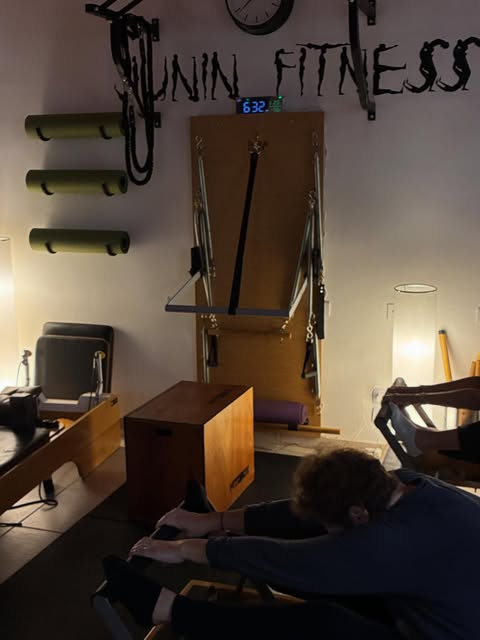
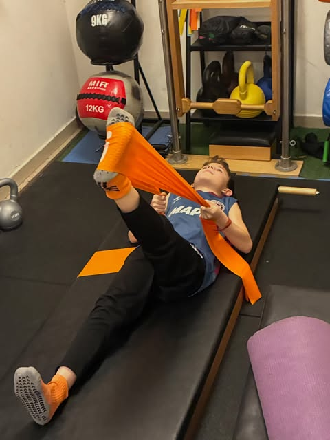

Pilates y entrenamiento que se adaptan a vos
Grupos reducidos, corrección en cada repetición y un instructor —Diego Leiras— que arma la rutina según tu cuerpo, no al revés. Desde tu primera clase hasta una recuperación puntual.

- Grupos reducidos: la clase gira en torno a vos, no al revés.
- Pilates, entrenamiento funcional, rehabilitación y masajes en un mismo estudio.
- Diego Leiras guía las clases hace más de 7 años, con corrección personal en cada ejercicio.
- Aire monitoreado en cada clase: ventilación controlada por niveles de CO₂.
- 5.0★ en Google con 50 reseñas. Espacio accesible y LGBTQ+ friendly.
- Estudio en Junín 1400, Recoleta. Se requiere solicitar turno.
Cuatro maneras de cuidar tu cuerpo
Las mismas cuatro disciplinas que Diego viene ofreciendo desde que abrió el estudio, ahora combinadas según lo que necesites en cada etapa.
Entrenamiento integral
Trabajo funcional con pesas rusas, bandas y balones medicinales que suma fuerza y resistencia a tu rutina de pilates.
Pilates
Método clásico en reformer, con corrección de postura en cada repetición y series que se adaptan a tu nivel.
Rehabilitación
Sesiones pensadas para recuperarte de una lesión o cuidar una patología puntual, con seguimiento cercano de cada movimiento.
Masajes
Un complemento manual para liberar tensión y acompañar tu recuperación entre clase y clase.
Lo que las reseñas repiten una y otra vez
Grupos realmente reducidos
Las clases nunca son multitudinarias: Diego ve y corrige a cada alumno en cada ejercicio, no un circuito genérico para todos por igual.
Aire de la clase, monitoreado
El estudio controla los niveles de CO₂ durante la clase y ventila en consecuencia — un detalle de cuidado que casi nadie más tiene en cuenta.
Se adapta a tu cuerpo, no al revés
Alumnos de 20 a 80 y pico, embarazadas, postparto y recuperaciones de lesión: cada rutina se arma según lo que necesitás vos.

Sobre Diego Leiras
Diego es la cara de Junín Fitness desde hace más de 7 años: profesor de pilates, entrenador funcional y masajista. Alumnos de todas las edades —desde adolescentes hasta personas de más de 80 años— describen sus clases como minuciosas, cálidas y exigentes en la técnica justa.
"Diego es sin dudas el mejor profesor de pilates."
— María de los Ángeles Mirás, alumna
Un espacio impecable, con luz natural
Reformers de madera, ventanas grandes y el mural de siluetas que le da nombre al estudio, en Junín 1400.




"No se trata de edad.
Se trata de adaptar."
Lo que dicen los alumnos en Google
"Diego es sin dudas el mejor profesor de pilates. Sus grupos son pequeños y él está siempre súper atento en enfocarse en lo que cada uno de sus alumnos necesita."
"Excelente lugar para pilates. Poca gente y el instructor es buenísimo. Todo muy personalizado. Lo recomiendo totalmente."
"Empecé las clases a tres meses de haber tenido a mi beba y fue una parte clave en mi recuperación. Entrenar con Diego es una experiencia completamente distinta."
"La mejor calidad humana, el mejor profesor. Tengo 81 años y estos ejercicios son fenomenales. Muy recomendable."
"El mejor lugar para hacer pilates. Calidez humana y excelencia profesional, la atención es personalizada. Las instalaciones impecables, un lujo."
"Hice pilates en un montón de lugares, ninguno como este. Lo buen profesor que es Diego y lo pendiente que está de la técnica es importante y no se ve mucho."
Accesibilidad e inclusión
Accesible en silla de ruedas
Entrada, estacionamiento y baño accesibles para personas en silla de ruedas.
LGBTQ+ friendly
Un espacio amigable y seguro para personas LGBTQ+ y personas trans.
Turnos a medida
Se requiere solicitar turno previo: coordinamos el horario que mejor te quede.
Horarios
El estudio abre de lunes a viernes. Los fines de semana permanece cerrado. Se recomienda concertar turno con anticipación.
Reservar por WhatsApp| Lunes | 8:00 – 21:00 |
| Martes | 8:00 – 21:00 |
| Miércoles | 8:00 – 21:00 |
| Jueves | 8:00 – 21:00 |
| Viernes | 8:00 – 21:00 |
| Sábado | Cerrado |
| Domingo | Cerrado |
Ubicación
Todo lo que preguntan antes de la primera clase
¿Necesito experiencia previa en pilates?
No. Diego adapta cada ejercicio a tu nivel y tu punto de partida, así que podés empezar sin haber hecho pilates antes.
¿Las clases son grupales o individuales?
Son clases en grupos reducidos, con seguimiento y corrección prácticamente individual dentro de cada grupo.
¿Hacen rehabilitación de lesiones o trabajan con patologías?
Sí. Muchos alumnos llegan derivados por una lesión o una recuperación puntual, y Diego arma la rutina en base a esas necesidades específicas.
¿Cuáles son los horarios del estudio?
De lunes a viernes de 8:00 a 21:00. Los fines de semana el estudio permanece cerrado.
¿Cómo reservo un turno?
Por WhatsApp o llamando al 011 4086-5501, o escribiendo por Instagram a @junin_fitness. Se requiere solicitar turno con anticipación.
¿El estudio es accesible?
Sí: entrada, estacionamiento y baño accesibles para personas en silla de ruedas. Es además un espacio LGBTQ+ friendly y seguro para personas trans.